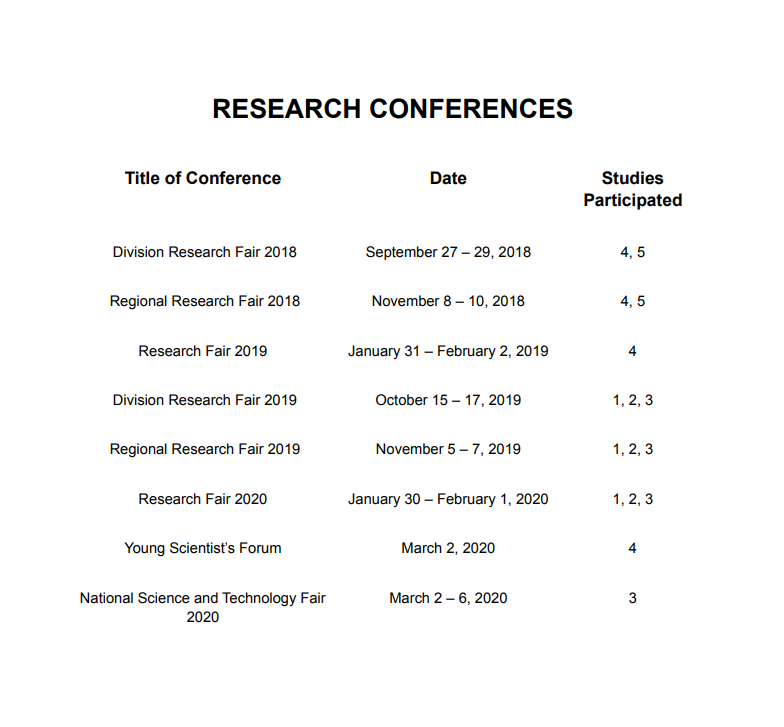
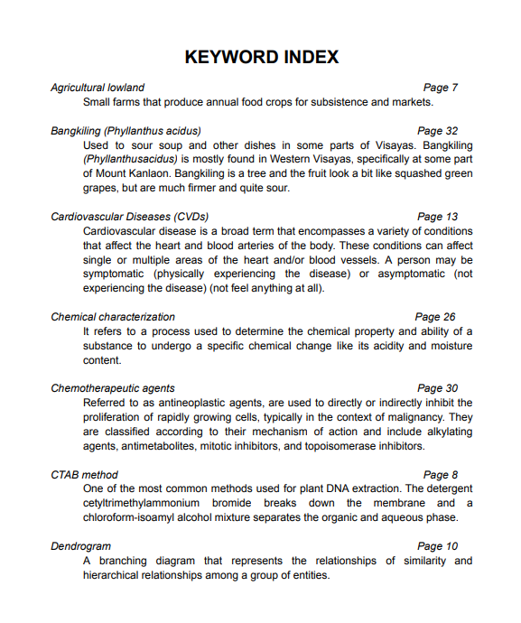
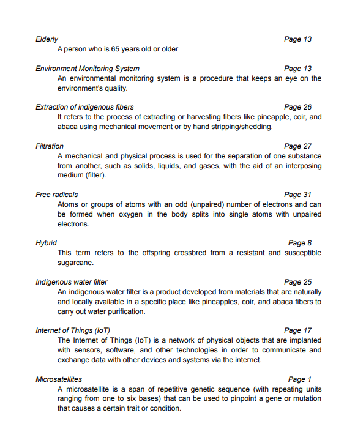
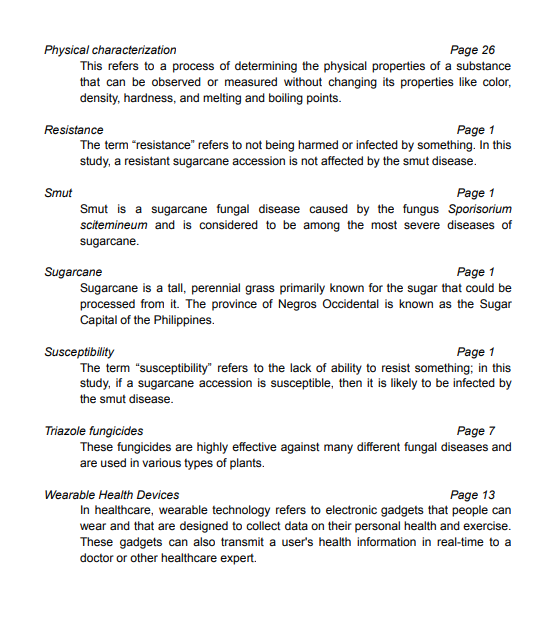

AWARDS
em
● 2019 Division Research Fair
○ Life Science Team Category - 2nd Place
● 2019 Regional Research Fair
○ Life Science Team Category - Participant
● 2020 UP Alchemes Research Fair
○ Life Science Category - National Finalist
em
● 2019 Division Research Fair
○ Life Science Individual Category - Champion
● 2019 Regional Research Fair
○ Life Science Individual Category - Top 6 Finalist
○ Honorable Mention in Agriculture
● 2019 UP Alchemes Research Fair
○ Life Science Category - National Finalist
Cytotoxicity and Free Radical Scavenging Activity of Phyllanthus Acidus (Bangkiling) Leaves Extract: A Potential Source of Plan-Based Chemotherapeutic Agent
● 2019 Division Research Fair
○ Life Science Team Category - 2nd Place
● 2019 Regional Research Fair
○ Life Science Team Category Participant
● 2019 UP Alchemes Research Fair
○ Life Science Category - National Finalist
● 2020 Young Scientists Forum - Gregor Mendel Laboratory, University of San Agustin Iloilo
○ Paper Presenter
Iot-Supported Smart Patient and Environment Monitoring System with Wireless Notification Network Utilized by ESP8266
● 2019 Division Research Fair
○ Innovation Expo Team Category - Champion
○ Gawad Likhang Agham Awardee
● 2019 Regional Research Fair
○ Innovation Expo Team Category - Champion
● 2020 National Science and Technology Fair
○ Innovation Expo Team Category - Finalist
● 2019 UP Alchemes Research Fair
○ Applied Science Category - Champion
Physically and Chemically Characterized Fibers as Indigenous Water Filters
● 2018 Division Research Fair
○ Physical Science Individual Category - 2nd Place
● 2018 Regional Research Fair
○ Physical Science Individual Category - Participant



ACKNOWLEDGEMENT
We would like to convey our heartfelt gratitude to our research advisers, Mr. Phillip Raymund R. De Oca and Mr. Nathan June Fernandez, for their patient supervision as well as their enthusiastic support and constructive criticism of these studies; also to Dr. Aris C. Larroder, the Research Unit Head of the Philippine Science High School – Western Visayas, who provided us with valuable guidance and assistance in the preparation of our manuscripts. Mrs. Nora Meneses, Senior Science Research Specialist of the Sugar Regulatory Administration; Ms. Roselyn Usero, laboratory head and manager of the Negros Prawn Producers Cooperative Analytical and Diagnostic Laboratory; Mr. John Dave Dueñas, Chief Executive Officer and Co-Founder of HyBRAIN Development Corporation; and the technicians of these laboratories are also appreciated for their help in data gathering, analyses and the resources in running the programs to these researches.
We would like to extend our gratitude to Mrs. Mercuria Recto; Mr. Julius Tamayo, the President of BCNHS Alumni Association; Mrs. Sheila Quirino, the Science, Technology, and Engineering Program Coordinator; Mr. Joey Ian C. Singson, the Officer-in-Charge Science Department and Science, Technology, and Engineering Program; Principals Mr. Warlito D. Rosareal and Mr. Allan M. Pomada; Dr. Joji Linaugo the Senior Education Program Specialist, Policy, Planning, and Research Division; Mrs. Edna Rose P. Gueco, Education Program Specialist for Science; Dr. Grace M. Abao, Public Schools District Supervisor of District V; Mr. Pete Galimba, Officer-in-Charge, the Office of the Assistant Schools Division Superintendent; and Mrs. Gladys Amylaine D. Sales, MS, the Officer-in-Charge, Office of the Schools Division Superintendent of Bacolod for their unwavering support throughout the production of the manuscripts and the journal.
In addition, we’d like to thank our parents and friends for being our towers of strength and helping us keep our heads up high.
To the place where our hopes and dreams began, the pillar of wondrous beginnings, our beloved school, Bacolod City National High School and its staff, words cannot describe how grateful we are; our hearts are always beaming with pride.
Lastly, to our Almighty God, whose grace is unending that supplied us the physical, mental, and emotional strength we needed. We owe it all to you and to the future of science in the Philippines.